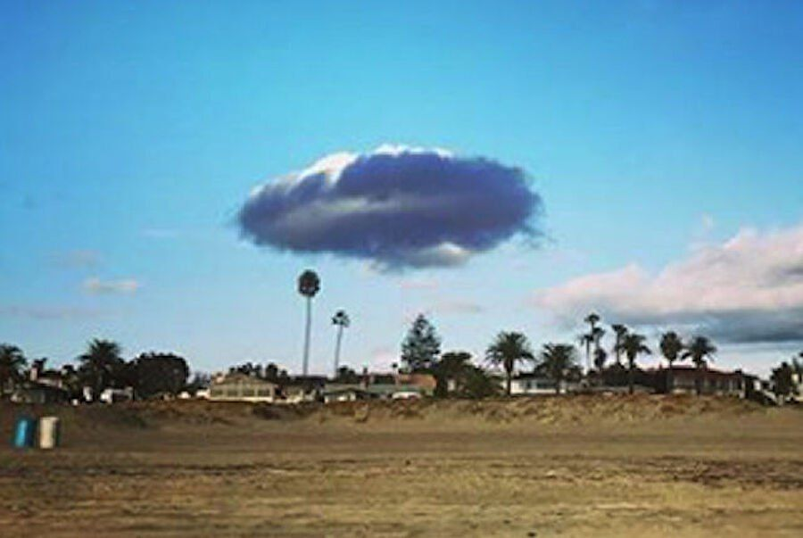
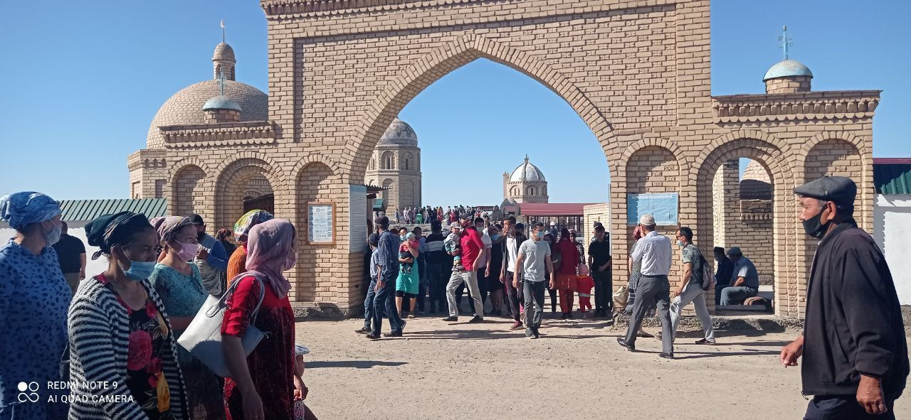

Sayt haqqında
Men bul saytti Kegeyli rayoni tarixi ushın jarattım.
Kóplew maǵluwmatlar
Bul menıń birinshi saytim.Men maǵluwmatlardi kóplegen saytlardan aldım. Tómende linklerin taslap ketemen.

Men bul saytti Kegeyli rayoni tarixi ushın jarattım.
Bul menıń birinshi saytim.Men maǵluwmatlardi kóplegen saytlardan aldım. Tómende linklerin taslap ketemen.
Kegeyli atınıń kelip shiǵiwi sol jerden aǵıb ótetiǵun kanal atı menen baylanistiradilar. Bul kanaldıń eki boyı kegey teregi menen, hám toranǵılları menen burkenip turǵanlıǵı ushin Kegeyli ati menen atalıp ketgen.
Kegeyli rayonı Qaraqalpaqstan Respublikasındag'ı rayon. Arqa Batıstan Moynaq, Batısdan Bozataw ha'm shıg'ıs ha'm arqa shıg'ıstan Qarao'zek, rayonları menen shegaralas. Maydanı 14.2 mıń km2. Xalqı 52,8 mın'.Rayon orayı — Kegeyli qalası.
Shólkemlestirilgen waqtı – 3-sentyabr, 1928-jıl.
Kegeylide tiykarǵı xalqı qaraqalpaqlar hám odan basqa qazaq, ózbek, orıs, tatar hám taǵı basqalar.
Kegey terek waqtında shaqaların shawıp tursań aq terektey dúzew bolıp ósedi, qurılısta da paydalanadı. Kóz tiymesin awıllarda Kegey teregimiz ele kóp.
Kegey teregi juda ahmiyetli bolıp esaplanadi sebebi usi terek hám kanal arqalı usi atǵa iye bolip otir.
M. Nızanov 1951-jılı Kegeyli rayonında tuwılǵan. Orta mektepti tamamlaǵannan soń Qaraqalpaq mámleketlik universitetin sırttan oqıp pitkeredi. Xızmet jolın ózi tuwılǵan rayondaǵı M. Jumanazarov atındaǵı xojalıqta jumısshı, «Paxtakor» sport jámiyetinde instruktor bolıp islewden baslaǵan.
M. Nızanov dóretiwshilik jolın qosıq jazıwdan baslaǵan. Satira janrına
ótiwine áskeriy xızmette júrgen dáwirlerde ataqlı túrk jazıwshısı Aziz
Nesinniń «Musht ketti» degen kitabınıń tosattan qolına túsip qalıwı
birden-bir sebep bolǵanlıǵın jazıwshı, shayır hám jurnalist Bazarbay
Seytaev penen sáwbetlesiwinde atap ótedi.
Ol sońǵı jılları kinoscenarist jazıwshı sıpatında «Tank», «Urı», «Kurort», «Qaysar», «Mehrigiya-márgiya», «Qorǵan» sıyaqlı kinofilmleri menen keń jurtshılıqqa tanıldı.
Mına link arqalı kinolardi korseńiz boladi.
1929-jılı 7-mayda Kegeyli rayonida tuwılǵan. Mektep petkergenden keyin Tashkent Medicinaliq Institutta (TashMI) oqiydi. Oqiwdi pitkergenden soń bas shipaker lawaziminda Kegeylide jumis alıp barǵan. 2007-jılı qaytıs bolǵan.

Ómiri hám dóretiwshiligi. Qaraqalpaqstan xalıq shayırı Tájetdin Seytjanov 1924-jılı 5-mayda Kegeyli rayonınıń «Kegeyli» xojalıǵında tuwılǵan. Onıń jaslıq jılları ekinshi jáhán urısı dáwirine tuwra kelip, orta mektepti pitkergennen-aq Watan qorǵawǵa atlanadı hám 1942—45-jılları urısta boladı.Ol kóplegen kitaplardı jazǵan. 1998-jılı qaytıs bolǵan.
Shıblıy ata zıyarati
Жолыңыз түсип, "Нөкис-Халқабад-Шоқ тораңғыл-Қараөзек" бағытында жүрип қалсаңыз, Кегейли районы "Жүзим бағ", "Қумшуңгил" ҳәм "Жалпақ жап" АПЖлары түйиспесинде зыяратшылар көп таўап қылатуғын үлкен бир қойымшылық бар. Оның арқа дарўазасынан кире беристеги донде тырнағы тастан қаланған, дийўаллары пискен гербиштен өрилген, төбелери исламый нағышта шыршаланған көк гүмбезлер менен безетилген қәсийетли қос мазар жайласқан.
Сол себепли, зыяратшылар қойымшылықты турмыста "Шыблық Ата" деп те, "Ғайып Ата" деп те, болмаса мази "Ата" деп те атай береди.
bir adam tajimahalǵa ziyarat qiliwǵa baradı. aldinan bir adam shıǵıp, qay jerden kelgenin soraydi. Qaraqalpaqstan Kegeyli rayonidan kelgenin aytadi. Ol kisi Shılbıy ataǵa bardińba dep soraydi. Qaraqalpaq adami yaq dep juwap beredi. Keynen sen qalay birinshi sol jerge ziyaratǵa barmadıń deydi. Yaǵniy Shılbıy ataǵa ziyarat qilsań, Tajimahalǵa ziyarat qilǵan menen teń eken.
Yшар тарелкa
НЛО (ушар тарелка) гипотезасы бурыннан бар түсиник. Мәселен НЛОның өзи емес, ал өзге планеталы "шоферы" 1989-жилы 1-январьға өтер ақшамда Кегейли районы Куйбышев атындағы совхоздың орайында турыўшы бир үйге келген жағдайы тарийхта болды. Өзге планеталы деген, көзи көрген адамның айтыўынша, Адамға уқсас, қоңыр терили, бойы 2 метр 10 см шамасында, тақ көзли болады екен. Бул ўақыя сол заманда барлық газеталарға шықты, "Маурит"тен берилди.. Бәлки көпшиликтиң еслеринде барда шығар.
 
Joybar basshısı Zulfiya Genjebaevna .